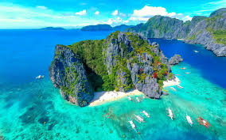

Experience the Paradise of El Nido
El Nido is a breathtaking destination in Palawan known for its stunning limestone cliffs, hidden lagoons, pristine beaches, and crystal-clear waters. It's the ultimate getaway for nature lovers and adventure seekers.
What's Included:
- Transportation: Round-trip flights from Manila to Puerto Princesa and land transfers to El Nido.
- Accommodation: 4 days and 3 nights at a beachfront resort.
- Island Hopping: Visit famous spots such as Big Lagoon, Small Lagoon, and Secret Beach.
- Snorkeling Gear: Complimentary use during tours for exploring coral reefs.
- Meals: Daily breakfast and one seafood barbecue lunch.
- Local Guide: Expert guides to ensure a safe and enjoyable experience.

Top Activities in El Nido:
- Island Hopping: Explore hidden beaches, lagoons, and caves in Bacuit Bay.
- Snorkeling & Diving: Discover vibrant marine life and coral gardens beneath the surface.
- Kayaking: Paddle through the serene waters of the lagoons for an up-close experience.
- Cliff Climbing: Scale limestone cliffs for unparalleled views of the islands.
- Beach Relaxation: Unwind on pristine beaches like Nacpan Beach and Seven Commandos Beach.